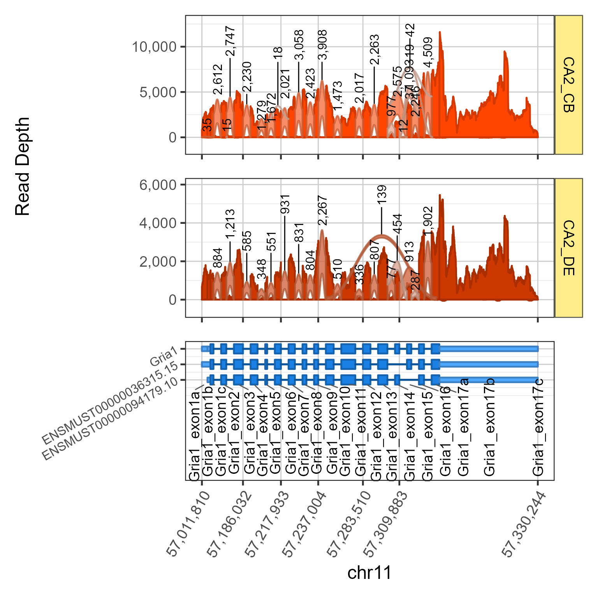
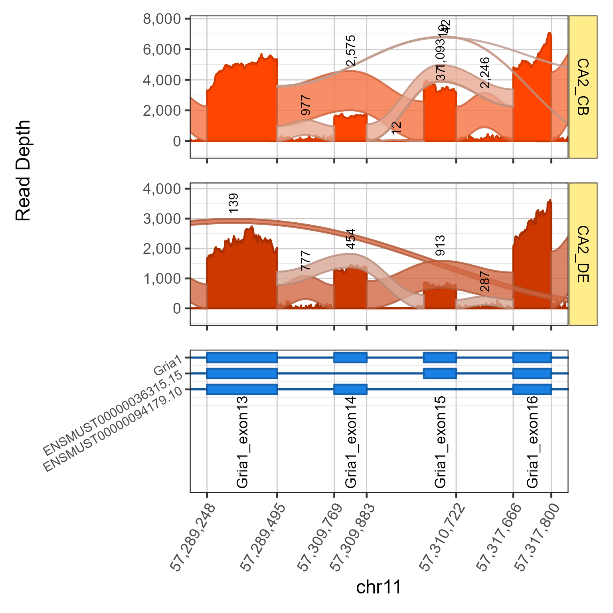
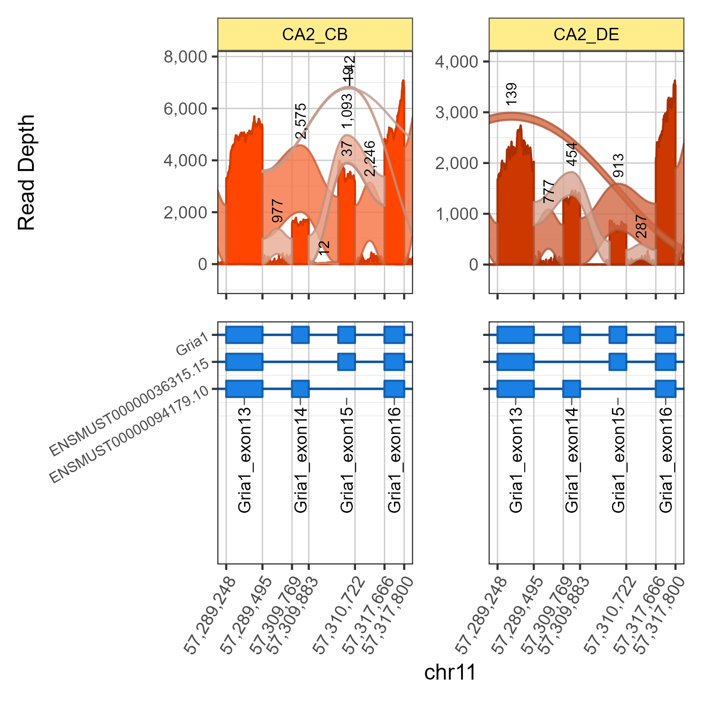
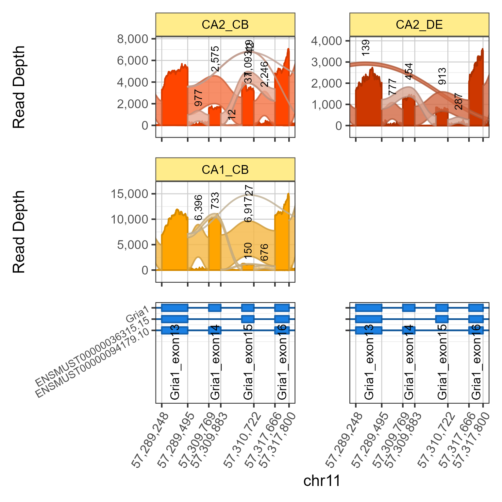

Make Splicejam Sashimi Figure, with optional columns, gene model, subset region by coordinates or exon range.
Usage
splicejamFigure(
sjenv = NULL,
gene = "Gria1",
gene_sd = NULL,
filesDF = NULL,
sample_id = NULL,
use_exon_range = NULL,
display_coords = NULL,
facet_scales = "free_y",
minJunctionScore = 10,
scoreArcFactor = 0.6,
use_ylim = NULL,
ylab = "Read Depth",
base_size = 18,
exonLabelSize = 14,
geneAxisSize = 12,
geneAxisAngle = 30,
label_junctions = TRUE,
junction_alpha = 0.8,
layout_ncol = 1,
gene_panel_height = 1,
do_plot = TRUE,
use_memoise = FALSE,
panel_method = c("patchwork", "cowplot", "plotly"),
show_progress = TRUE,
verbose = FALSE,
...
)Arguments
- sjenv
environmentcontaining data produced bysashimiDataConstants(), specifically:'flatExonsByGene'
'flatExonsByTx'
'detectedTx'
'detectedGenes'
tx2geneDF':
data.framewith columns: 'gene_name', 'transcript_id'.
- gene
characterstring with gene(s) to include in the flattened exon model. Default 'Gria1' is for historical reasons, the flagship gene in Farris et al 2019.- gene_sd
listoptional sashimi data output fromprepareSashimi().- filesDF
data.framewith columns 'url', 'sample_id', 'type'. SeeprepareSashimi()for more information.- sample_id
characterdefault NULL, optionally used to subset data to show only data for samples 'sample_id'.- use_exon_range
charactervector with first and last exons to include in the genome coordinate range. Typically in the form: 'genesymbol_exon1', 'genesymbol_exon8b'- display_coords
numericdefault NULL, with optional genome coordinates to use for the x-axis range.- facet_scales
characterstring passed toggplot2::facet_wrap()argument 'scales'. Use 'fixed' to share the same y-axis range in each panel.- minJunctionScore
numericdefault 10, passed toprepareSashimi()to require junctions with at least this score in order to be displayed. It is included here as a common argument to customize viaprepareSashimi().- scoreArcFactor
numericdefault 0.6 with default arc height added to the mean ribbon height, relative to its width. Default 0.6 ensures the ribbon rises at least 60% its width. Note argument 'scoreArcMinimum=100' can be adjusted through '...', and is not modified otherwise.- use_ylim
listofnumericy-axis limits, applied to each 'sample_id' panel. It usesggh4x::scale_y_facet()and is currently experimental, working out the enquo mechanics.- ylab
characterdefault 'Read Depth' used as the y-axis label beside the Splicejam sashimi plots. It can be customized as relevant, for example: 'Normalized Read Depth'.- base_size
numericwith base font size, default 18.- exonLabelSize
numericwith exon label size, default 14.- geneAxisSize
numericfont size for gene axis labels, used for gene and transcript labels in the gene model panel, default 14.- geneAxisAngle
numericangle in degrees, default 30, for the gene/transcript labels in the gene-transcript-exon model panel. The transcript labels are often quite long, and angling the labels slightly downhelps reduce the screen space required.- label_junctions
logicalwhether to label junctions with count/score, default TRUE.- junction_alpha
numericdefault 0.8, default alpha for junction ribbon arcs. Higher values are more opaque, and less transparent.- layout_ncol
integernumber of columns for output, default 1.- gene_panel_height
numericrelative panel height for the gene/transcript/exon model, relative to each sashimi panel with relative height 1. Default is 1.- do_plot
logicaldefault TRUE, whether to render the plot.- use_memoise
logicaldefault FALSE, whether to enable data cache methods with memoise.- panel_method
charactermethod to assemble plot panels.'patchwork' (default) uses patchwork, and tends to have better handling of whitespace
'cowplot' uses cowplot, but tends to have much more whitespace.
'plotly' uses plotly to create an interactive figure.
- show_progress
logicaldefault TRUE, shows a progress bar using R terminal or Shiny, depending upon whether it is running inside Shiny.Note: The progress is updated (somewhere) but not displayed unless the user (you) also enable it like this:
progressr::handlers(global=TRUE)The exception is when called from within
sashimiAppServer(), which setsprogressr::withShinyProgress()to enable it.
- verbose
logicalwhether to print verbose output, default TRUE.verbose == TRUE: prints major steps and elapsed time (default)verbose == 2: as above, addingprepareSashimi()major stepsverbose == 3: as above, addingplotSashimi()anduse_ylimin detail. Probably too verbose at that point.
- ...
additional arguments are passed to relevant functions:
prepareSashimi(),gene2gg(),plotSashimi(). Some common examples:show: passed to
plotSashimi()to customize which features are displayed: 'coverage', 'junctions', 'junctionLabels'fill_scheme: passed to
plotSashimi()to define coloring by 'sample_id' (default) or 'exon'. When 'exon' the junctions are colored using 'junc_color' and 'junc_fill'.
Value
list with data elements:
cp_sashimi: the ggplot sashimi object
cp_sashimi_list:
listof ggplot sashimi objects, per panelcp_gene: the ggplot gene/transcript/exon object
cp_genes:
listof ggplot gene/transcript/exon objectsgene_sd: the sashimi data from
prepareSashimi()layout_ncol: the layout ncol as used
use_ylim: the
listof ylim as usedtimings_df:
data.framefor various processing steps, and duration in seconds.cp: the final assembled ggplot figure
Details
This function is intended to mimic the functional steps
performed by launchSashimiApp() which are aimed to provide
a user-friendly interface to the many internal details.
Notable features:
'use_exon_range': new argument allows zooming into a genome coordinate range using exon names.
gene model is shown and aligned by default, using cowplot.
'layout_ncol': allows multiple columns with splicejam and gene/transcript/exon model.
Progress Bar
To enable a progress bar when using R console:
progressr::handlers(global=TRUE)This command permits the progress bar to print to the R console, otherwise the progress is tracked but not displayed. In other words, it makes a grand announcement in an empty room, in the far corner of an abandoned building.
Todo:
Consider providing interactive output via
ggplotly().Expand the approach to permit multiple genes.
Apply memoise to plot data, as in
launchSashimiApp()Check when supplied with display_coords, no use_exon_range, it should (in theory) find gene(s) in that region, use them to assemble flattened exons, then generate figure with one or more genes.
See also
Other Splicejam core functions:
launchSashimiApp(),
sashimiDataConstants(),
splicejamDataFromTxDb()
Examples
# By default, it loads farrisdata
sjenv <- sashimiDataConstants()
#> (14:30:24) 29Jul2026: get_fn_envir(): Variable 'gtf' not found
#> (14:30:24) 29Jul2026: get_fn_envir(): Variable 'empty_uses_farrisdata' found in parent.frame(1)
#> (14:30:24) 29Jul2026: get_fn_envir(): Variable 'use_memoise' found in parent.frame(1)
#> (14:30:24) 29Jul2026: get_fn_envir(): Variable 'verbose' found in parent.frame(1)
#> (14:30:24) 29Jul2026: sashimiDataConstants(): Defining default gtf file: 'ftp://ftp.ebi.ac.uk/pub/databases/gencode/Gencode_mouse/release_M12/gencode.vM12.annotation.gtf.gz' from which tx2geneDF, exonsByTx, and cdsByTx will be derived.
#> (14:30:24) 29Jul2026: sashimiDataConstants(): Reloading stored tx2geneDF: 'gencode.vM12.annotation.tx2geneDF.txt'
#> (14:30:24) 29Jul2026: sashimiDataConstants(): Reloading txdb from: 'gencode.vM12.annotation.txdb'
#> Loading required package: GenomicFeatures
#> Loading required package: AnnotationDbi
#> Loading required package: Biobase
#> Welcome to Bioconductor
#>
#> Vignettes contain introductory material; view with
#> 'browseVignettes()'. To cite Bioconductor, see
#> 'citation("Biobase")', and for packages 'citation("pkgname")'.
#> (14:30:24) 29Jul2026: sashimiDataConstants(): Reloading cached exonsByTx from txdb
#> (14:30:25) 29Jul2026: sashimiDataConstants(): Reloading cached cdsByTx from txdb
#> (14:30:33) 29Jul2026: sashimiDataConstants(): Reloading cached flatExonsByGene using: exonsByTx,cdsByTx,detectedTx,tx2geneDF
#> (14:30:34) 29Jul2026: sashimiDataConstants(): flattenExonsByTx_m_cached:TRUE
#> (14:30:34) 29Jul2026: sashimiDataConstants(): Reloading cached flatExonsByTx using: exonsByTx,cdsByTx,detectedTx,tx2geneDF
sjenv$filesDF <- farrisdata::farris_sashimi_files_df
sjfig <- splicejamFigure(sjenv=sjenv, gene="Gria1", sample_id=c("CA2_CB", "CA2_DE"))

sjfig <- splicejamFigure(sjenv=sjenv, gene="Gria1", sample_id=c("CA2_CB", "CA2_DE"),
use_exon_range=c("Gria1_exon13", "Gria1_exon16"), scoreArcFactor=0.4)

sjfig2 <- splicejamFigure(sjenv=sjenv, gene="Gria1", sample_id=c("CA2_CB", "CA2_DE"),
layout_ncol=2,
use_exon_range=c("Gria1_exon13", "Gria1_exon16"), scoreArcFactor=0.4)

sjfig3 <- splicejamFigure(sjenv=sjenv, gene="Gria1", sample_id=c("CA2_CB", "CA2_DE", "CA1_CB"),
layout_ncol=2, use_memoise=TRUE,
use_exon_range=c("Gria1_exon13", "Gria1_exon16"), scoreArcFactor=0.4)
